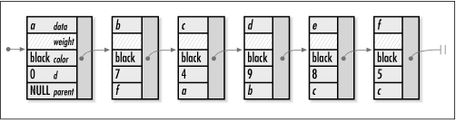

16.6 Implementation and Analysis of
Shortest Paths
To compute the
shortest paths from a vertex to all others reachable from it
in a directed, weighted graph, the graph is represented in the
same manner as described for minimum spanning trees. However,
we use the PathVertex structure instead of
MstVertex for vertices (see Example
16.3). The PathVertex structure allows us
to represent weighted graphs as well as keep track of the
information that Dijkstra's algorithm requires for vertices
and edges. The structure consists of five members:
data is the data associated with the vertex,
weight is the weight of the edge incident to
the vertex, color is the color of the vertex,
d is the shortest-path estimate for the
vertex, and parent is the parent of the vertex
in the shortest-paths tree. We build a graph consisting of
PathVertex structures in the same manner as
described for building graphs with MstVertex
structures.
The shortest
operation begins by initializing every vertex in the list of
adjacency-list structures. We set the initial shortest-path
estimate for each vertex to DBL_MAX, except
the start vertex, whose estimate is set to 0.0. The vertex
stored in each adjacency-list structure is used to maintain
the color, shortest-path estimate, and parent of the vertex,
for the same reasons as mentioned for computing minimum
spanning trees.
At the center of Dijkstra's algorithm is a
single loop that iterates once for each vertex in the graph.
We begin each iteration by selecting the vertex that has the
smallest shortest-path estimate among the white vertices. We
color this vertex black where it resides in the list of
adjacency-list structures. Next, we traverse the vertices
adjacent to the selected vertex. As we traverse each vertex,
we look up its color and shortest-path estimate in the list of
adjacency-list structures. Once we have located this
information, we call relax to
relax the edge between the selected
vertex and the adjacent vertex. If relax needs to update the
shortest-path estimate and parent of the adjacent vertex, it
does so where the adjacent vertex resides in the list of
adjacency-list structures. We then repeat this process until
all vertices have been colored black.
Once the main loop in Dijkstra's algorithm
terminates, we are finished computing the shortest paths from
the start vertex to all other vertices reachable from it in
the graph. At this point, we insert each black
PathVertex structure from the list of
adjacency-list structures into the linked list
paths. In paths, the parent of
the start vertex is set to NULL. The parent
member of every other vertex points to the vertex that
precedes it in the shortest path from the start vertex. The
weight member of each
PathVertex structure is not populated because
it is needed only for storing weights in adjacency lists. Figure
16.4 shows the list of PathVertex
structures returned for the shortest paths computed in Figure
16.3.

The runtime complexity of shortest is O (EV
2), where V is the
number of vertices in the graph and E is the number of edges. This comes
from the main loop, in which we select vertices and relax
edges. For each of the V
vertices we select, we first traverse V elements in the list of
adjacency-list structures to determine which white vertex has
the smallest shortest-path estimate. This part of the main
loop is O (V 2) overall. Next, for
each vertex adjacent to the vertex we select, the list of
adjacency-list structures is consulted for the information
needed to relax the edge between the two vertices. Over all
V vertices that we select, the
list is consulted E times, once
for each of the E edges in all
of the adjacency lists together. Each of these consultations
requires O (V ) time to search the list.
Therefore, for all V vertices
that we select, an O (V ) operation is performed E times. Consequently, this part of
the loop is O (EV 2), and the main loop
overall is O (V 2 + EV 2), or O (EV
2). Since the loops
before and after the main loop are O (V
), the runtime complexity of shortest is O (EV
2). However, recall that with a little
improvement (similar to that discussed for Prim's algorithm at
the end of the chapter), Dijkstra's algorithm can run in O (E lg V ) time.
Example 16.3.
Implementation for Computing Shortest Paths /****************************************************************************
* *
* ----------------------------- shortest.c ------------------------------ *
* *
****************************************************************************/
#include <float.h>
#include <stdlib.h>
#include "graph.h"
#include "graphalg.h"
#include "list.h"
#include "set.h"
/*****************************************************************************
* *
* --------------------------------- relax -------------------------------- *
* *
*****************************************************************************/
static void relax(PathVertex *u, PathVertex *v, double weight) {
/*****************************************************************************
* *
* Relax an edge between two vertices u and v. *
* *
*****************************************************************************/
if (v->d > u->d + weight) {
v->d = u->d + weight;
v->parent = u;
}
return;
}
/*****************************************************************************
* *
* ------------------------------- shortest ------------------------------- *
* *
*****************************************************************************/
int shortest(Graph *graph, const PathVertex *start, List *paths, int (*match)
(const void *key1, const void *key2)) {
AdjList *adjlist;
PathVertex *pth_vertex,
*adj_vertex;
ListElmt *element,
*member;
double minimum;
int found,
i;
/*****************************************************************************
* *
* Initialize all of the vertices in the graph. *
* *
*****************************************************************************/
found = 0;
for (element = list_head(&graph_adjlists(graph)); element != NULL; element =
list_next(element)) {
pth_vertex = ((AdjList *)list_data(element))->vertex;
if (match(pth_vertex, start)) {
/***********************************************************************
* *
* Initialize the start vertex. *
* *
***********************************************************************/
pth_vertex->color = white;
pth_vertex->d = 0;
pth_vertex->parent = NULL;
found = 1;
}
else {
/***********************************************************************
* *
* Initialize vertices other than the start vertex. *
* *
***********************************************************************/
pth_vertex->color = white;
pth_vertex->d = DBL_MAX;
pth_vertex->parent = NULL;
}
}
/*****************************************************************************
* *
* Return if the start vertex was not found. *
* *
*****************************************************************************/
if (!found)
return -1;
/*****************************************************************************
* *
* Use Dijkstra's algorithm to compute shortest paths from the start vertex. *
* *
*****************************************************************************/
i = 0;
while (i < graph_vcount(graph)) {
/**************************************************************************
* *
* Select the white vertex with the smallest shortest-path estimate. *
* *
**************************************************************************/
minimum = DBL_MAX;
for (element = list_head(&graph_adjlists(graph)); element != NULL; element
= list_next(element)) {
pth_vertex = ((AdjList *)list_data(element))->vertex;
if (pth_vertex->color == white && pth_vertex->d < minimum) {
minimum = pth_vertex->d;
adjlist = list_data(element);
}
}
/**************************************************************************
* *
* Color the selected vertex black. *
* *
**************************************************************************/
((PathVertex *)adjlist->vertex)->color = black;
/**************************************************************************
* *
* Traverse each vertex adjacent to the selected vertex. *
* *
**************************************************************************/
for (member = list_head(&adjlist->adjacent); member != NULL; member =
list_next(member)) {
adj_vertex = list_data(member);
/***********************************************************************
* *
* Find the adjacent vertex in the list of adjacency-list structures. *
* *
***********************************************************************/
for (element = list_head(&graph_adjlists(graph)); element != NULL;
element = list_next(element)) {
pth_vertex = ((AdjList *)list_data(element))->vertex;
if (match(pth_vertex, adj_vertex)) {
/*****************************************************************
* *
* Relax the adjacent vertex in the list of adjacency-list *
* structures. *
* *
*****************************************************************/
relax(adjlist->vertex, pth_vertex, adj_vertex->weight);
}
}
}
/**************************************************************************
* *
* Prepare to select the next vertex. *
* *
**************************************************************************/
i++;
}
/*****************************************************************************
* *
* Load the vertices with their path information into a list. *
* *
*****************************************************************************/
list_init(paths, NULL);
for (element = list_head(&graph_adjlists(graph)); element != NULL; element =
list_next(element)) {
/**************************************************************************
* *
* Load each black vertex from the list of adjacency-list structures. *
* *
**************************************************************************/
pth_vertex = ((AdjList *)list_data(element))->vertex;
if (pth_vertex->color == black) {
if (list_ins_next(paths, list_tail(paths), pth_vertex) != 0) {
list_destroy(paths);
return -1;
}
}
}
return 0;
} |